1과목: 응용역학
1. 그림과 같은 원형 및 정사각형 관이 재료로서 관의 두께(t) 및 둘레(4b=2πr)가 동일하고, 두 관의 길이가 일정할 때 비틀림 T에 의한 두관의 전단응력의 비 (τ(a)/τ(b))는 얼마인가?
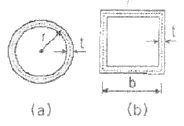
2. 그림과 같이 C점이 내부힌지로 구성된 게르버보에 대한 설명으로 옳지 않은 것은?
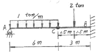
3. 다음과 같은 A점과 B점에 모멘트하중(Mo)이 작용할 때 생기는 전단력도의 모양은 어떤 형태인가?
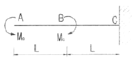
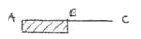
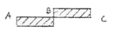
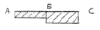
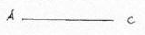
4. 두 주응력(σz=σy=kg/cm2)이 아래 그림과 같다. 이 면과 θ°=45°를 이루고 있는 면의 응력은?
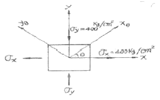
5. 다음 그림과 같은 와렌(warren)트러스에서 부재력이 ‘0(영)’인 부재는 몇 개인가?
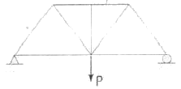
6. 다음은 가상일의 방법을 설명한 것이다. 틀린 것은?
7. 다음 그림과 같은 T형 단면의 도심축(x-x)에 대한 회전반지름(r)은?
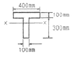
8. 그림과 같이 길이가 5m이고 휨강도(EI)가 100 tㆍm2인 기둥의 최소 임계하중은?
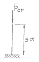
9. 다음과 같은 부정정 구조물에서 B지점의 반력의 크기는? (단, 보의 휨강도 EI는 일정하다.)
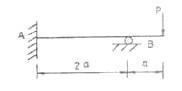
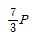
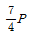
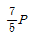
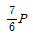
10. 그림과 같은 단순보의 최대전단응력 τmax를 구하면? (단, 보의 단면은 지름이 D인 원이다.)
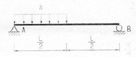
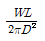
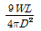
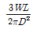
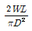
11. 아치축선이 포물선인 3활절아치가 그림과 가티 등분포하중을 받고 있을 때, 지점 A의 수평반력은?
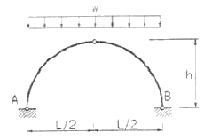
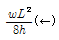
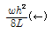
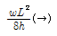
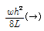
12. 그림과 같은 3경간 연속보의 B점이 5cm 아래로 침하하고 C점이 3cm 위로 상승하는 변위를 각각 보였을 때 B점의 휨모멘트 MB를 구한 값은? (단, EI=8×1010kg/cm2 로 일정)
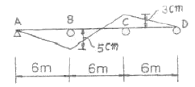
13. 폭 20cm, 높이 30cm의 단순보가 중앙점에 그림과 같은 집중하중을 받을 때 중앙점 C의 처짐 δ를 구한 값은? (단, E=80,000kgㆍcm2)
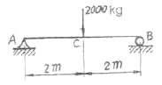
14. 지름 5cm의 강봉을 8t으로 당길 때 지름은 약 얼마나 줄어 들겠는가? (단, 포아송비 v=0.3, 탄성계수 E=2.1 × 106kgㆍcm2)
15. 그림과 같은 내민보에서 C점의 휨 모멘트가 영(令)이 되게 하기 위해서는 x가 얼마가 되어야 하는가?
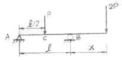
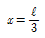
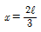
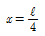
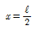
16. 그림과 같은 장주의 길이가 같을 경우 기둥 (a)의 임계하중이 4t 이라면 기둥(b)의 임계하중은? (단, EI는 일정하다.)
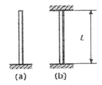
17. 그림과 같은 단순보에서 휨모멘트에 의한 탄성변형에너지는? (단, EI는 일정하다.)
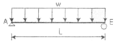
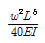
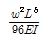
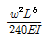
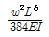
18. 다음의 부정정 구조물을 모멘트 분뱁법으로 해석하고자 한다. C점이 룰러지점임을 고려한 수정강도계수에 의하여 B점에서 C점으로 분배되는 분배율 fsc를 구하면?
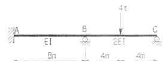
19. 다음 인장부재의 수직변위를 구하는 식으로 옳은 것은? (단, 탄성계수는 E)
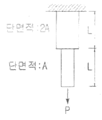
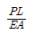
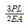
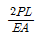
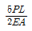
20. 그림과 같은 구조물의 C점의 연직하중이 작용할 때, AC부재가 받는 힘은?
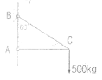
2과목: 측량학
21. 다음과 같은 단면에서 절토단면적은 얼마인가?
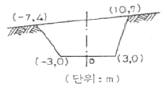
22. 우리나라의 노선측량에서 일반철도에 주로 이용되는 완화곡선은?
23. 두 지점의 거리측량 결과가 다음과 같을 때 최확값은?
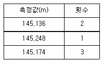
24. 노선 측량의 일반적 작업 순서로서 옳은 것은? (단, A:종ㆍ횡단측량, B:중심측량, C:공사측량, D:답사)
25. 항공사진의 표정작업 중 사진의 축척, 경사를 조정하고 위치를 결정하는 표정은?
26. 트래버스 측량에서 선점시 주의하여야 할 사항이 아닌 것은?
27. 다음 등고선에서 AB 사이의 수평거리가 60m이면 AB의 경사는?
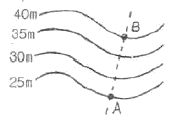
28. 그림과 같은 삼각망에서 만족하여야 할 조건식이 아닌 것은?
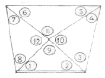
29. 노선측량에 관한 설명 중 잘못된 것은?
30. 대단위 신도시를 건설하기 위한 넓은 지형의 정지공사에서 토량을 계산하고자 할 때 가장 적당한 방법은?
31. 노선측량에서 단곡선 설치시 필요한 교각 I=95° 30' 곡선 반지름 R=300m 일 때 장현(long chord:L)은?
32. 직접법으로 등고선을 측정하기 위하여 A점에 평판을 세우고 기계 높이 1.5m를 얻었다. 점 P에 표척(staff)을 세워 2.68m를 얻었다면 점 P의 등고선은 몇 m 인가? (단, A점의 표고는 71.6m임)
33. 비행고도 5000m에서 촬영한 2매의 연속사진의 주점기선장이 70mm일 때 등고선 간격 10m에 해당되는 시차차는?
34. 직사각형의 가로, 세로가 그림과 같다. 면적 A를 가장 적절히(오차론적으로) 표현한 것은?
35. 레벨로부터 60m 떨어진 표척을 기준한 값이 1.258m 이며 이때 기포가 1 눈금 편위되어 있었다. 이것을 바로 잡고 다시 시준하여 1.267m를 읽었다면 기포의 감도는?
36. 하천측량에서 평면측량의 일반저긴 측량 범위로 가장 적합한 것은?
37. 교호 수준 측량을 하여 다음과 같은 결과를 얻었다. A점의 표고가 120.564m이면 B점의 표고는?
38. 다음의 설명 중 틀린 것은?
39. 전진법(前進法)에 의하여 6각형이 토지를 측정하였다. 측점 A를 출발하여 B, C, D, E, F, A로 돌아 왓을 때 폐합오차가 30cm이었다면 측점 D의 오차 분배량은? (단, AB=60m, BC=40m, CD=30m, DE=50m, EF=20m, FA=50m)
40. 배각법에 의한 각 관측 방법에 대한 설명 중 잘못된 것은?
3과목: 수리학 및 수문학
41. 오리피스의 수두차가 최대 4.9m이고 오리피스의 유량계수가 0.5일 때 오리피스의 유량은? (단, 오리피스의 단면적은 0.01m2이다.)
42. 관수로에서 동수경사선에 대한 설명으로 옳은 것은?
43. 직경 10cm인 연직관 속에 높이 2m만큼 모래가 들어있다. 모래면 위의 수위를 20cm로 일정하게 유지 시켰더니 투수량 Q=3L/hr 이였다. 이 때 모래의 투수계수 k는?
44. 폭이 넓은 직4각형 수로에서 폭 1m당 0.5m3/sec의 유량이 80cm의 수심으로 흐르는 경우 이흐름은? (단, 동점성 계수는 0..012cm2/sec, 한계수심은 29.5cm이다.)
45. 오리피스(orifice)에서의 유량 Q를 계산할 때 수두 H의 측정에 1%의 오차가 있으면 유량계산의 결과에는 얼마의 오차가 생기는가?
46. 지름 4cm의 원형단면 관에서 물의 흐름이 그림과 같이 구부러질 때 곡면을 지지하는데 필요한 힘은 Px는? (단, 흐름의 속도가 15m/sec이고 마찰을 무시한다.)
47. 다음 설명 중 옳지 않은 것은?
48. 지하의 사질 여과층에서 수두 차가 0.4m이고 투과거리가 3.0m일 때에 이곳을 통과하는 지하수의 유속은? (단, 투수계수는 0.2cm/sec이다.)
49. 다음 표와 같이 40분간 집중홍수가 계속되었다면 지속기간 20분인 최대강우 강도는?
50. 중량이 600kg, 비중이 3.0인 물체를 물(담수)속에 넣었을 때 물 속에서의 중량은?
51. 유역 내 5개 강우량 관측점에 기록된 강우량과 지배면적 이 표화 같을 때 Thiessen 법으로 계산된 유역 평균 강우량은 얼마인가?
52. 유체의 밀도(ρ), 점성계수(μ), 벽면의 마찰력(τ0), 평균유속(V) 마찰속도 (u.)의 관계식으로 옳은 것은?
53. SCS의 초과강우량 산정방법에 대한 설명 중 옳지 않은 것은?
54. 광폭의 직4각형 단면 수로에서 최소 비에너지가 3m 일 때 한계수신은 얼마인가?
55. 개수로의 흐름에 가장 지배적인 영향을 미치는 것은?
56. 정수압의 이론은 다음 중 어느 경우에 적용되는가?
57. 1시간 간격의 강우량이 12.6mm, 23.3mm, 18.3mm, 5.7mm이다. 지표유출량이 38mm일 때 ∅-index는?
58. 레이놀즈(Reynolds)수에 대한 설명으로 틀린 것은?
59. 베르누이(Bernoulli)정리의 적용조건이 아닌 것은?
60. 한계수심에 대한 설명으로 옳지 않은 것은?
4과목: 철근콘크리트 및 강구조
61. 그림과 같은 용접부의 응력은?
62. 그림과 같은 복철근 보의 유효깊이는? (단, 철근 1개의 단면적은 250mm2 이다.)
63. b=350 mm, d=550mm인 직사각형 단면의 보에서 지속하중에 의한 순간처짐이 16mm였다. 1년 후 총 처짐량은 얼마인가? (단, As=2246mm2, Ag=1284mm2, ζ=1.4)
64. 2방향 슬래브 설계시 직접설계법을 적용할 수 있는 제한사항에 대한 설명 중 틀린 것은?
65. 철근콘크리트 깊은 보에 대한 전단설계 방법 중 잘못된 것은?
66. 인장 이형철근의 정착길이 산정시 필요한 보정계수에 대한 설명 중 틀린 것은? (단, fsp는 콘크리트의 쪼갬인장강도)
67. 그림에 나타난 직사각형 단철근 보가 공칭 휨강도 Mp에 도달할 때 인장철근의 변형률은 얼마인가? (철근 D22 4개의 단면적 1548mm2, fck=28MPa, fy=350MPa)
68. fck=35MPa, fy=350MPa을 사용하고 bn=500mm, d=1000mm인 휨을 받는 직사각형 단면에 요구되는 최소 휨철근량은 얼마인가?
69. P=300kN의 인장응력이 작용하는 판두께 10mm인 철판에 ∅19mm인 리벳을 사용하여 접합 할 때의 소요 리벳 수는? (단, 허용전단응력 = 110MPa, 허용지압응력 = 220MPa_
70. 주어진 T형 단면에서 전단에 대해 위험단면에서 Vud/Mu=0.28 이었다. 휨철근 인장강도의 40% 이상의 유효 프리스트레스트 힘이 작용할 때 콘크리트의 공칭전단강도(Vo)는 얼마인가? (단, fck=45MPa, Vu:계수전단력, Mu:계수휨모멘트 d:압축측 표면에서 긴장재 도심까지의 거리)
71. 그림과 같은 T형보에서 응력사각형의 깊이 a는? (단, fck=21MPa, fy=300MPa, As=4020mm2이다.)
72. 다음 주어진 단철근 직사각형 단면이 연성파괴를 한다면 이 단면의 공칭휨강도는 얼마인가? (단, fck=21MPa, fy=300MPa)
73. 콘크리트 구조설계기준에서는 띠철근으로 보강된 기둥에 대해서는 감소계수 ∅=0.65, 나선철근으로 보강된 기둥에 대해서는 ∅=0.70을 적용한다. 그 이유에 대한 설명으로 가장 적당한 것은?
74. 아래 그림과 같은 보에서 계수전단력 Vu=225kN에 대한 가장 적당한 스터럽간격은? (단, 사용된 스터럽은 철근 D13이다. 철근 D13의 단면적은 127mm2, fck=24MPa, fy=350MPa이다.)
75. 철근콘크리트가 성립하는 이유에 대한 설명으로 잘못된것은?
76. 철근콘크리트 부재의 최소 피복두께에 관한 설명 중 틀린 것은?
77. T형 PSC보에 설계하중을 작용시킨 결과 보의 처짐은 0이었으며, 프리스트레스 도입단계부터 부착된 계측장치로부터 상부 탄성변형률 ∊=3.5×10-4을 얻었다. 콘크리트 탄성계수 Ec=26000MPa, T형보의 단면적 Ag=150000mm2, 유효율 R=0.85일 때, 강재의 초기 긴장력 P1를 구하면?
78. 콘크리트의 설계기준강도(fck)가 35MPa이며 철근의 설계항복강도가 400MPa이면 직경이 25mm인 압축 이형철근의 기본정착길이 (Idb)는 얼마인가?
79. 옹벽의 토압 및 설계일반에 대한 설명 중 옳지 않은 것은?
80. 콘크리트구조물에서 비틀림에 대한 설계를 하려고 할 때 계수비틀림모멘트를 계산하는 방법에 대한 다음 설명 중 잘못된 것은? (단, d는 유효깊이)
5과목: 토질 및 기초
81. 두께 5m의 점토층을 90% 압밀하는데 50일이 걸렸다. 같은 조건하에서 10m의 점토층을 90% 압밀하는데 걸리는 시간은?
82. 어떤 흙 1200g(함수비 20%)과 흙 2600g(함수비 30%)을 섞으면 그 흙의 함수비는 약 얼마인가?
83. 토질 종류에 따른 다짐 곡선을 설명항 것 중 옳지 않은 것은?
84. 그림에서 안전율 3을 고려하는 경우, 수두차 h를 최소 얼마로 높일 때 모래시료에 분사현상이 발생하겠는가?
85. 현장에서 다짐된 사질토의 상대다짐도가 95%이고 최대 및 최소 건조단위중량이 각각 1.76t/m3, 1.5t/m3이라고 할 때 현장시료의 건조단위중량과 상대밀도는? (순서대로 건조단위중량/상대밀도)
86. 깊은기초에 대한 설명으로 틀린 것은?
87. 다음은 주요한 Sounding(사운딩)의 종류를 나타낸 것이다. 이 가운데 사질토에 가장 적합하고 점성토에서도 쓰이는 조사법은?
88. Vane Test에서 Vane의 지름 50mm, 높이 10cm, 파괴시 토오크가 59.kgㆍcm일 때 점착력은?
89. 점착력이 5t/m2, rt=1.8t/m2의 비배수상태(∅=0)인 포화된 점성토 지반에 직경 40cm, 길이 10m의 PHC 말뚝이 항타시공 되었다. 이 말뚝의 선단지지력은 얼마인가? (단, Meyerhof 방법을 사용)
90. 크기가 30cm×30cm의 평판을 이용하여 사질토위에서 평판재하시험을 실시하고 극한 지지력 20t/m2을 얻었다. 크기가 1.8m×1.8m인 정사각형기초의 총허용하중은 약 얼마인가? (단, 안전률 3을 사용)
91. 그림과 같은 옹벽배면에 작용하는 토압의 크기를 Rankine의 토압공식으로 구하면?
92. 내부마찰각 ∅u=0, 점착력 Cu=4.5t/m2, 단위중량이 1.9t/m3되는 포화된 점토층에 경사각 45°로 높이 8m인 사면을 만들었다. 그림과 같은 하나의 파괴면을 가정했을때 안전율은? (단, ABCD의 면적은 70m2이고, ABCD의 무게중심은 0점에서 4.5m거리에 위치하며, 호 AC 길이는 20.0m이다.)
93. 흙의 투수계수 k에 관한 설명으로 옳은 것은?
94. 어떤 흙의 전단실험결과 c=1.8kg/cm2, ∅=35°, 토립자에 작용하는 수직응력 σ=3.6kg/cm2일 때 전단강도는?
95. 포함된 점토에 대하여 비압밀비배수(UU)시험을 하였을 때의 결과에 대한 설명 중 옳은 것은? (단, ∅:내부마찰각, c:점착력)
96. 아래조건에서 점토층 중간면에 작용하는 유효응력과 간극수압은?
97. 어떤 점토의 압밀계수는 1.92×10-3cm2/sec, 압축계수는 2.86×10-2cm2/g이었다. 이 점토의 투수계수는? (단, 이 점토의 초기간극비는 0.8이다.)
98. 연약점토 지반에 말뚝을 시공하는 경우, 말뚝을 타입한 후 어느 정도 기간이 경과한 우에 재하시험을 하게 된다. 그 이유로 가장 적합한 것은?
99. 사질토에 대한 직접 전단시험을 실시하여 다음과 같은 경과를 얻었다. 내부마찰각을 약 얼마인가?
100. 수평방향의 투수계수(kh)가 0.4cm/sec이고 연직방향의 투수계수(kv)가 0.1cm/sec일 때 등가 투수계수를 구하면?
6과목: 상하수도공학
101. 관거의 접합방법 중에서 유수(流水)는 원활하지만 관거의 매설깊이가 증가하여 공사비가 많이 들고, 펌프 배수하는 지역에서는 양정이 높게 되는 단점이 있는 것은?
102. 다음 상수도 시설중 수원에서 취수한 물을 정수장까지 공급하는 시설은?
103. 다음 중 응집제로 사용되지 않는 것은?
104. 펌프는 흡입실양정 및 토출량을 고려하여 전양정에 따라 선정하여야 한다. 전양정이 5m 이하일 때 표준이며 비교회전도(Ns)가 1100~2000 정도인 펌프 형식은?
1⑤. 수중의 철, 망간을 제거하는 방법 중 산화법이 아닌 것은?
106. 직경이 20cm이고 길이가 100m인 관을 직경 30cm인 등치관으로 바꾸려면 필요한 길이는 몇 m 인가? (단, 모든 손실계수는 동일하다고 가정하고 Hazen-Williams 공식을 적용한다.)
107. 계획하수량 1.6m3/sec이 관경 1,000mm, 동수경사 0.0024 관길이 30m, 여유량 0.04m의 조건의 원형관을 흐를 때 관내의 역사이펀 손실수두(H)는? (단, 를이용하고 β=1.5를 적용)
108. 하수의 배제방식에 대한 설명 중 옳지 않은 것은?
109. 도수시설 중 접합정에 대한 설명으로 맞지 않는 것은?
110. 인구 10만의 도시에 계획 1인 1일 최대급수량 600L, 급수보급율 80%를 기준으로 상수도 시설을 계획하고자 한다. 이 도시의 계획 1일 최대급수량은?
111. 급수방식에 대한 다음 설명 중 맞지 않는 것은?
112. 하수 소독 방법인 염소 및 자외선 소독의 장단점 비교에 관한 내용으로 틀린 것은?
113. 다음 설명 중 옳지 않은 것은?
114. 하수도의 관거계획에 대한 설명으로 옳은 것은?
115. 다음 중 수격작용(Water Hammer)의 방지 또는 감소 대책에 대한 설명으로 틀린 것은?
116. 다음 중 호소나 저수지가 수원일 경우 적합하지 않은 취수시설은?
117. 전염소처리로 제거할 수 오염물질과 가장 거리가 먼 것은?
118. 다음 중 계획 1일 최대급수량을 기준으로 삼지 않는 시설은?
119. 슬러지 농축방법 중 중력식 농축이 갖는 특징으로 틀린 것은?
120. 표준활성슬러지 처리법에 관한 설명으로 틀린 것은?